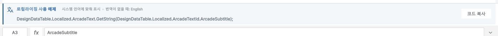
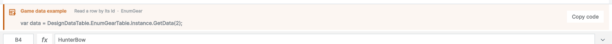
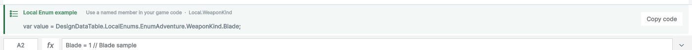
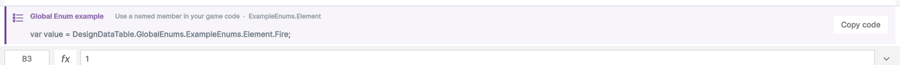

Tracefolio REPORTS & ISSUES
Tracefolio REPORTS & ISSUES파일별 코드 사용 예제 카드
완료게임 데이터·로컬/전역 Enum·로컬라이징의 실제 선택값을 사용한 안내 카드와 코드 복사 기능.
게임 데이터·열거형·로컬라이징 파일의 리본 아래에 사용 안내 카드를 적용하고 실제 Unity 화면과 코드 동작을 검증했습니다.
표시하는 내용
- 게임 데이터: 선택한 Id의 GetData 조회 코드. 헤더나 빈 행에서는 첫 유효 Id를 예로 듭니다.
- 로컬·전역 열거형: 선택한 열과 행의 실제 namespace·타입·멤버를 표시합니다.
- 로컬라이징: 선택한 번역 키의 GetString 코드와 번역이 없을 때 사용할 대체 언어를 구분해 표시합니다. 첫 항목을 고정 표시하던 문구는 제거했습니다.
- Summary: 컬럼 이름·타입·설명이 데이터 시트와 동기화된다는 설명을 표시합니다.
- 홈 탭을 포함한 모든 리본 탭에서 유지됩니다. 일반 엑셀에는 표시하지 않습니다.
실제 화면
로컬라이징은 한국어 UI, 나머지 미리보기는 영어 UI입니다. 아래 이미지는 실제 Unity 캡처에서 안내 영역만 잘랐습니다.
   
디자인과 동작
- 문서 강조색의 왼쪽 선과 연한 배경, 기능 아이콘, 설명, 코드 순서로 구성했습니다.
- 코드 복사 버튼은 전체 코드를 복사합니다. 코드에는 namespace를 명시해 별도 using 없이 사용할 수 있습니다.
- 좁은 창에서는 코드가 줄바꿈됩니다. Summary처럼 코드가 아닌 안내에는 복사 버튼을 표시하지 않습니다.
- 예제 갱신 시 Enum 파싱 결과를 재사용합니다. 같은 선택 상태를 1000회 갱신해 캐시 유지 여부를 확인했습니다.
검증 결과
- native 사용 예제 검사 20개와 추가 Enum 행·컬럼 전환 검사를 통과했습니다.
- 실제 마우스 이벤트로 복사 버튼을 눌러 전체 코드와 Dirty 상태를 검증했습니다. 테스트 후 기존 클립보드를 복원했습니다.
- UI에 표시한 코드 5개를 그대로 포함한 C# 빌드: 경고 0·오류 0.
- 기존 Play 잠금·상황별 리본·게임 리본·Summary 회귀 검사를 통과했습니다.
- 안내 카드를 9개 UI 언어와 720px 폭으로 실제 촬영했습니다. 가이드 공유 화면은 영어입니다.
- 가이드 32장 재촬영, 9개 언어 및 현재 이미지 37장 검사 오류 0. 브라우저 검사 140개 통과. 영문·한글 PDF 38쪽 텍스트·폰트 검사 통과.
- 한글 TC와 상세 근거:
C:/Projects/DesignDataTable/Docs/Testing/2026-10-29/usage-examples/
미확인·남은 사항
요청한 구현·필수 검증·문서 갱신에 남은 항목은 없습니다. 격리 Unity UI에서 검증했으며 사용자 주 프로젝트의 전 기능 수동 QA로 확대해 보고하지 않습니다. 이번 작업에서는 푸시나 인터넷 게시를 하지 않았습니다.
시간과 검색
- 제안 시간: 15–25분.
- 시작: 2026-10-29 17:53:41 KST (UTC+09:00).
- 실제로 완료된 시간: 20분 35초, 2026-10-29 18:14:16 KST (UTC+09:00).
- XERJ: 사용 — GetString 안내 구현 후보를 검색한 뒤 현재 리본·생성 API 소스와 대조했습니다. 추가 레이아웃 검색에는 rg를 사용했습니다.
로컬 HTML 보고서입니다. 공개 배포하지 않았습니다.